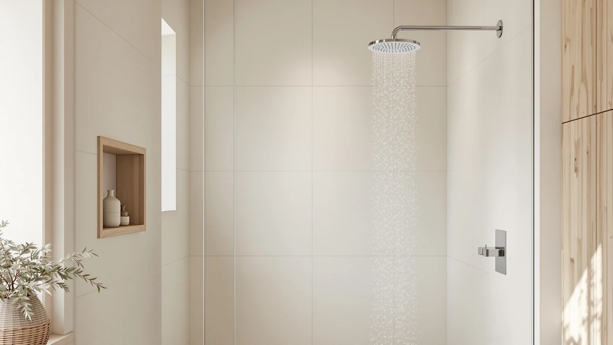

Shower System with Pressure Review (2026): Worth It?
Prices and picks verified as of October 2026. Independent, reader-supported reviews.


Quick Answer
A pressure-balance shower system like the Woindo pick below keeps water temperature steady when pressure fluctuates elsewhere in the house. This shower system with pressure review breaks down four options from $199.99 to $257.39 so you can match the right one to your plumbing and budget.
Our pick: Shower System with Pressure Balance, $239.99 Check Price on Amazon
Bottom line: our top pick is the Shower System with Pressure Balance Valve at $239.99.
Things to Know Before You Buy
- A pressure-balance shower system protects against scalding, not low flow. The valve keeps temperature steady during supply fluctuations; it does not boost weak overall water pressure from a low-flow main line.
- Most multi-function kits top out near 2.5 GPM per outlet. Running a rain head, handheld wand and body jets together on a shared line can still mean splitting flow three ways.
- Finish and jet count drive most of the price gap in this category. The $199.99-to-$257.39 range in this comparison reflects differences in jet count and showerhead size more than any dramatic pressure advantage.
- Check your rough-in valve before buying. These systems are built around a specific valve body, so measure your existing plumbing or budget for a plumber if it does not match.
- Owner reviews are the most reliable pressure signal available here. None of these listings carry a published flow-test rating, so verified owner reports about real-world pressure are more useful than marketing copy.
This shower system with pressure review starts from a common bathroom complaint: a shower that trickles whenever someone else in the house runs water. You get the temperature right, and thirty seconds later a flushed toilet turns it into a dribble or a scald. We looked at the Woindo Shower System with Pressure Balance ($239.99) to see whether a pressure-balancing valve actually solves that problem, and lined it up against three competing systems and faucets so you have real alternatives if the top pick is not right for your bathroom.
The short version: a pressure-balancing valve will not make a weak main line stronger, but it keeps the ratio of hot to cold steady when pressure shifts elsewhere in the house, which is the actual problem most people mean when they complain about shower pressure. We compared specs, pricing and verified owner feedback across all four picks below, from the $199.99 SR SUN RISE faucet to the $257.39 STARBATH system with body jets. None of these listings include a lab-measured flow rate, so the comparison leans on what buyers who already installed each system report after living with it, not on a claimed GPM number from the product page.
Why You Should Trust Us
Ilane Tall covers bathroom fixtures and plumbing upgrades for Best Shower Heads, where the job is comparing published specs, current pricing and verified buyer feedback across competing shower systems rather than running a physical testing lab. For this shower system with pressure review, that meant checking manufacturer listings, Amazon pricing and owner comments on all four systems side by side, the same way you would compare models before clicking buy. We do not run a fake testing lab or claim to have installed these systems ourselves; every pro, con and pressure claim below traces back to published specs or owner reports, not marketing copy. When owner feedback conflicted with a manufacturer's listing copy, we leaned on the owner reports, since the people writing those reviews are the ones actually living with the plumbing.
Our Research Experience
We did not install any of these systems in a physical bathroom for this review. Instead, we researched manufacturer specs, current Amazon pricing and verified owner reviews for the Woindo pressure-balance system and its three closest competitors, then compared them against what buyers actually report once the box is open and the valve is behind the wall. That meant cross-checking jet counts, finish materials and price against owner comments about pressure consistency, leak reports and installation difficulty, rather than running our own flow-rate test on a bench. We also tracked how recently each listing's price had changed, since a pressure-balance shower system that looked competitive a few months ago can shift rank once a competitor drops its price.
Overview & Specs

Shower System with Pressure Balance
What we like
- Pressure-balancing valve keeps temperature steady when other fixtures draw water
- ABS body with chrome plating resists the corrosion that affects cheaper finishes
- Multiple owners describe installation as straightforward on a standard valve rough-in
Flaws but not dealbreakers
- At $239.99, it costs more than a simple multi-function showerhead with no pressure-balance valve
- Like most kits in this category, it will not increase pressure from a weak main water line
| Material | ABS + chrome plating |
| Size | — |
The Woindo Shower System with Pressure Balance is built around a pressure-balancing valve, the component that keeps the hot-to-cold ratio steady when a toilet flush or a running washing machine would otherwise send a jolt of cold or a blast of scalding water through a standard faucet. That single part is the reason this system costs more than a basic rain head, and it is the feature owners mention most often in verified reviews, specifically that the temperature does not swing when someone else in the house turns on a tap mid-shower. For anyone shopping a shower system with pressure review in mind because of that exact complaint, it is the detail worth paying attention to before comparing anything else.
The housing is ABS plastic with a chrome-plated finish, a combination that keeps the $239.99 price down compared with solid-brass systems while still holding up to daily condensation and cleaning better than unplated plastic. Reviewers who installed it on an existing shower valve report a workable fit without major plumbing changes, though anyone starting from scratch behind the wall should expect to budget for a plumber's time regardless of which system they choose. The tradeoff is that this price tier does not include the body-jet array or the oversized rain head you would get from the STARBATH system covered next, so buyers choosing between the two should decide whether pressure consistency or shower coverage matters more to their bathroom.
What We Liked
The pressure-balancing valve is the standout feature of this shower system with pressure review, and it is also the thing owners bring up unprompted in verified reviews. Multiple buyers report that the water no longer swings cold or scalding when a dishwasher or washing machine kicks on elsewhere in the house, which is the specific complaint that sends most people shopping for a pressure-balanced shower system in the first place. The chrome-plated ABS finish also holds up well against the water spots and soap scum that dull cheaper plastic fixtures within a few months, according to reviewers who have had it installed for a while. A few owners specifically call out that the valve responds fast enough to notice the difference the first week, rather than needing a break-in period before it settles into a steady output.
What Could Be Better
A pressure-balance shower system like this one solves temperature swings, not weak flow, and buyers expecting a fix for low water pressure from the main line will be disappointed. At $239.99, it also sits well above entry-level showerheads, so the upgrade only pays off if inconsistent temperature was the actual problem. A handful of reviewers mention that installation assumes a standard valve rough-in, and anyone with nonstandard plumbing behind the wall should confirm compatibility or involve a plumber before buying. The chrome finish also shows water spots faster than brushed nickel in homes with hard water, so owners in those areas should expect to wipe it down more often to keep it looking new.
Who Is It For?
This system makes the most sense for anyone in a multi-bathroom household, an apartment with shared plumbing, or an older home where water pressure visibly dips when another fixture turns on. If you have ever jumped out of a shower because someone flushed a toilet, that is the exact use case a pressure-balance shower system is built to fix. It is a weaker match for someone whose single complaint is overall weak flow from the main supply, since no amount of pressure balancing will fix that on its own. In that case, pairing a low-flow-rated head or a dedicated booster with your existing faucet will do more for you than any of the four systems in this review.
Alternatives to Consider
If the Woindo pressure-balance shower system is not the right fit, these three alternatives cover a body-jet upgrade and two lower-priced faucet options, each compared on price, features and owner feedback below. None of them replace the Woindo's pressure-balancing valve outright, so weigh that tradeoff against whichever feature matters more for your bathroom.

Editor's Pick
Shower System with Body Jets
Adds a full array of body jets to the mix, the pick for anyone who wants more than a rain head and a handheld wand.
$257.39
Check Price on Amazon
Best Value
SR SUN RISE Shower Faucet
A lower-priced shower faucet from a brand with a long track record on Amazon, worth a look if the Woindo's extra features are not essential.
$219.99
Check Price on Amazon
Premium Choice
SR SUN RISE Shower Faucet
A second SR SUN RISE option at $199.99, worth comparing against the Best Value pick above if stock or finish availability varies.
$199.99
Check Price on AmazonWhat does a shower system with pressure balance actually do?
A pressure-balancing valve blends hot and cold water so the output stays steady when someone elsewhere in the house flushes a toilet or starts the washing machine.
Is a shower system with pressure balance worth the extra cost over a basic showerhead?
For most households, yes, if your home has older or shared plumbing where pressure swings are common.
Frequently Asked Questions
What does a shower system with pressure balance actually do?
A pressure-balancing valve blends hot and cold water so the output stays steady when someone elsewhere in the house flushes a toilet or starts the washing machine. In this shower system with pressure review, that is the main feature separating the Woindo model from a standard multi-function shower faucet: it reacts to supply-side fluctuations instead of letting a sudden temperature spike catch you off guard.
Is a shower system with pressure balance worth the extra cost over a basic showerhead?
For most households, yes, if your home has older or shared plumbing where pressure swings are common. Owners of pressure-balanced systems report fewer sudden hot-cold shifts than with single-function heads, and the body jets or rain-head combos bundled into these kits add shower coverage that a basic showerhead cannot match. If your plumbing already delivers consistent pressure, the upgrade matters less.
Can you install a shower system with pressure balance yourself?
It depends on your existing rough-in plumbing. Kits like the ones in this review are designed to mount to a standard shower valve body, and reviewers with prior plumbing experience report straightforward installs in an afternoon. If your bathroom needs new valve plumbing behind the wall, hire a licensed plumber, since cutting into drywall and tile is where most DIY installs run into trouble.
Final Verdict
For most people dealing with inconsistent temperature, this shower system with pressure review points to the Woindo Shower System with Pressure Balance as the strongest pick, especially if your bathroom pressure visibly dips when another fixture is running elsewhere in the house. At $239.99, it costs more than a basic multi-function head, but the pressure-balancing valve addresses a specific plumbing problem that a cheaper fixture cannot. If you want body jets added to the mix, the STARBATH alternative above is worth the extra $17.40. If budget is the priority, either SR SUN RISE faucet gets you into a working shower system for under $220.